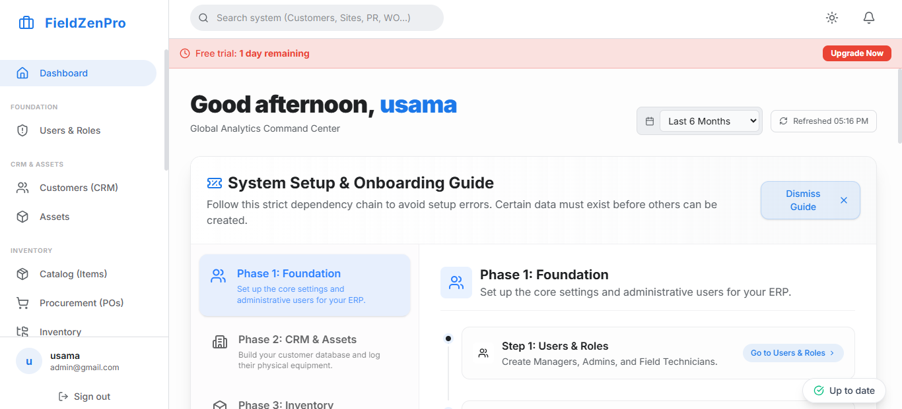

Ten years ago, a vigorous debate existed in the service industry: should you host your operational software on a server in your own office (on-premise), or should you trust it to the cloud? Today, that debate is over. The server humming in the IT closet is no longer a symbol of control; it is a massive operational liability, a security risk, and a bottleneck to growth.
The transition to cloud based field service management software represents a fundamental shift in how service businesses operate. It moves the burden of IT maintenance away from the business owner and onto specialized technology providers, unlocking levels of speed, accessibility, and security that were previously available only to Fortune 500 companies.

The traditional model of buying software licenses and installing them on a local server creates several unsolvable problems for a modern, mobile workforce:
"Your core competency is providing excellent service to your customers. Managing server uptime, applying security patches, and configuring VPNs is a distraction from that mission. The cloud eliminates that distraction entirely."
Cloud-based architecture—where your software and data are hosted in highly secure data centers managed by companies like Amazon, Google, or Microsoft—reverses these liabilities into distinct operational advantages.
With cloud software, the "office" is wherever you have an internet connection. Dispatchers can manage routes from a laptop at home during a snowstorm. The owner can check daily revenue from their phone while on vacation. Technicians connect instantly to the central database via standard web protocols, with no clunky VPNs required.
Cloud platforms are updated continuously. Bug fixes, security patches, and new features are pushed to the software in the background, often daily or weekly. You always log in to the newest, most secure version of the software without experiencing a second of downtime or paying an upgrade fee.
The data centers hosting modern cloud FSM software utilize physical security, biometric access controls, and cybersecurity teams that dwarf the resources of any small business. Data is encrypted both in transit (between the device and the server) and at rest (on the server). Automated, geo-redundant backups ensure that even in the event of a catastrophic regional failure, your data is never lost.
If you acquire a competitor and double the size of your fleet overnight, a cloud system scales instantly to accommodate the new technicians, data volume, and API traffic. There is no need to purchase a larger server or add RAM to your local network.
FieldZenPro is a truly cloud-native platform, architected from the ground up to leverage the speed, scalability, and security of modern cloud infrastructure. Stop worrying about server maintenance and start focusing on growing your business.
Experience the speed and security of a true cloud-native FSM platform. Try FieldZenPro free.
Start Your 14-Day Free Trial